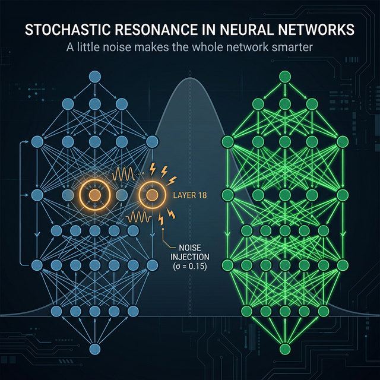
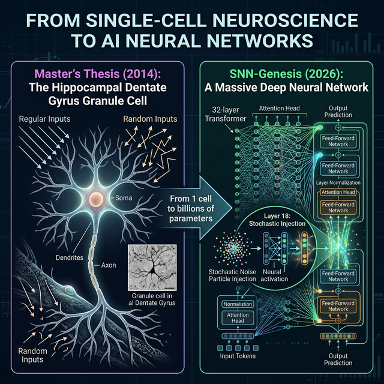
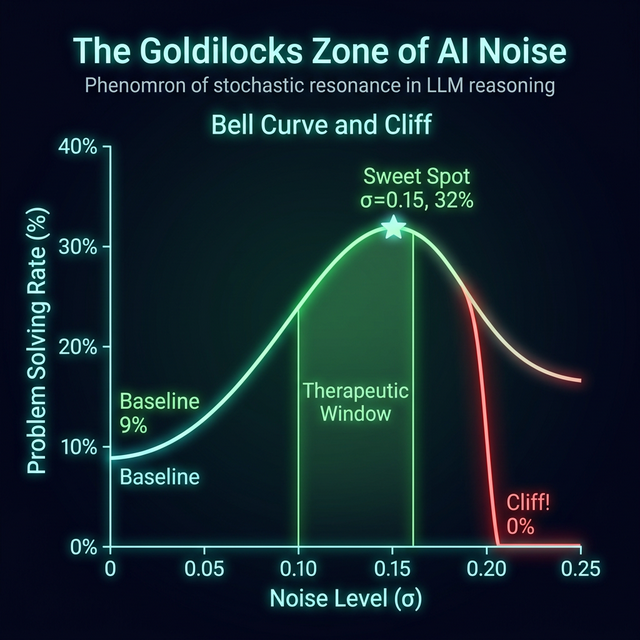
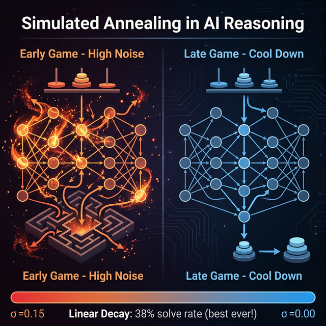
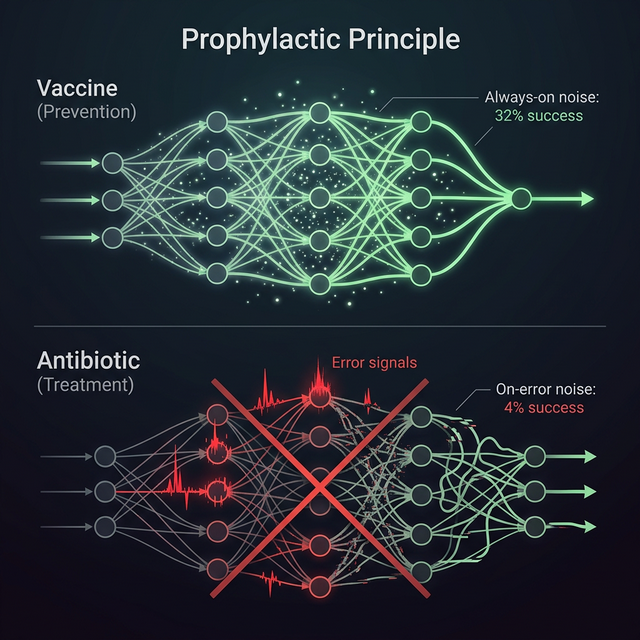

I discovered that injecting tiny amounts of random noise into a single layer of a Large Language Model dramatically improves its reasoning ability — a phenomenon known as Stochastic Resonance.
In physics, stochastic resonance is the counterintuitive phenomenon where adding noise to a weak signal actually makes it easier to detect. I found the same effect in AI reasoning.
Large Language Models get trapped in reasoning dead-ends. Like a ball stuck in a valley, they can't escape local minima without external help.
Inject tiny random noise (σ=0.15) into Layer 18 of a 32-layer Transformer. The noise "shakes" the model out of dead-ends, boosting solve rate from 9% to 32%.
N=100 trials, p=8.4×10⁻⁵. The effect is statistically undeniable. Too much noise (σ=0.20) causes complete collapse — a phase transition.

This research began in 2014 with my master's thesis studying how random stimulation enhances information processing in a single hippocampal neuron. Now, the same principle scales to entire neural networks.
Discovered that random (vs. regular) stimulation to a single granule cell enhances information processing. One cell, two input pathways.
Built a framework for LLM safety using biologically-inspired SNN perturbations. Discovered homeostasis, CfC brain atlas, and universal safety zones.
The single-cell principle scales: noise at one layer (L18) of Mistral-7B boosts reasoning 3.6×. Orthogonal decomposition proves direction×magnitude interaction is key.
Multi-layer correlated noise achieves 40% solve rate (10× baseline). Discovered the 1/√N dose-adjustment law: σ must scale inversely with the square root of injected layers to prevent collapse.

There exists a "Goldilocks Zone" of noise — too little does nothing, too much destroys reasoning. The transition at σ=0.20 is a genuine phase transition, with cosine similarity ≈ 0.50 as the critical threshold.
| σ | Solve Rate | Cosine Similarity | SNR | Status |
|---|---|---|---|---|
| 0.00 | 9% | 1.000 | ∞ | 📉 Baseline |
| 0.10 | 36.7% | 0.689 | 0.95 | 🟢 Effective |
| 0.15 | 32% | 0.533 | 0.63 | ⭐ Sweet Spot |
| 0.16 | 23.3% | 0.507 | 0.59 | ⚠️ Declining |
| 0.20 | 0% | 0.414 | 0.46 | 💀 Collapse |

The Goldilocks Zone: peak at σ=0.15, cliff at σ=0.20

Cooling Protocol: linear decay achieves 38% (best ever)
Noise is a vaccine, not an antibiotic. It must be present before reasoning enters a failure basin — applying it after errors only makes things worse.
Always-on noise prevents the model from falling into reasoning traps. Like a vaccine that builds immunity before infection.
On-error noise injection HURTS. Once the model outputs an error, the context is contaminated — noise can't fix a poisoned history.

"Stochastic resonance is a vaccine, not an antibiotic. The noise must be present before reasoning enters a failure basin."
Latest version. Open access.
All experiment scripts. MIT License.
Hiroto Funasaki — ORCID
@misc{funasaki2026genesis,
title={SNN-Genesis: Stochastic Resonance in LLM Reasoning},
author={Funasaki, Hiroto},
year={2026},
doi={10.5281/zenodo.18625621}
}